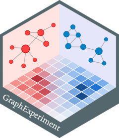

Coercion methods for GraphExperiment objects
Source: R/coerce-methods.R
GraphExperiment-coerce.RdThe GraphExperiment class inherits from SingleCellExperiment,
which in turn inherits from (Ranged)SummarizedExperiment. To ensure
GraphExperiment easily interoperates with these classes, we provide
users with traditional as() coercion methods.
Examples
# Simulate a count matrix
gene_ids <- paste0("gene", seq_len(200))
cell_ids <- paste0("cell", seq_len(100))
mat <- matrix(rpois(20000, 5), ncol = 100, dimnames = list(gene_ids, cell_ids))
# Coerce from `SummarizedExperiment`
se <- SummarizedExperiment(assays = list(mat))
as(se, "GraphExperiment")
#> class: GraphExperiment
#> dim: 200 100
#> metadata(0):
#> assays(1): ''
#> rownames(200): gene1 gene2 ... gene199 gene200
#> rowData names(0):
#> colnames(100): cell1 cell2 ... cell99 cell100
#> colData names(0):
#> reducedDimNames(0):
#> mainExpName: NULL
#> altExpNames(0):
#> rowGraphs(0):
#> colGraphs(0):
# Coerce from `RangedSummarizedExperiment`
rse <- as(se, "RangedSummarizedExperiment")
as(rse, "GraphExperiment")
#> class: GraphExperiment
#> dim: 200 100
#> metadata(0):
#> assays(1): ''
#> rownames(200): gene1 gene2 ... gene199 gene200
#> rowData names(0):
#> colnames(100): cell1 cell2 ... cell99 cell100
#> colData names(0):
#> reducedDimNames(0):
#> mainExpName: NULL
#> altExpNames(0):
#> rowGraphs(0):
#> colGraphs(0):
# Coerce from `SingleCellExperiment`
sce <- as(se, "SingleCellExperiment")
as(sce, "GraphExperiment")
#> class: GraphExperiment
#> dim: 200 100
#> metadata(0):
#> assays(1): ''
#> rownames(200): gene1 gene2 ... gene199 gene200
#> rowData names(0):
#> colnames(100): cell1 cell2 ... cell99 cell100
#> colData names(0):
#> reducedDimNames(0):
#> mainExpName: NULL
#> altExpNames(0):
#> rowGraphs(0):
#> colGraphs(0):